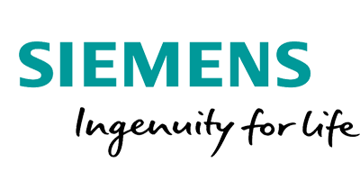
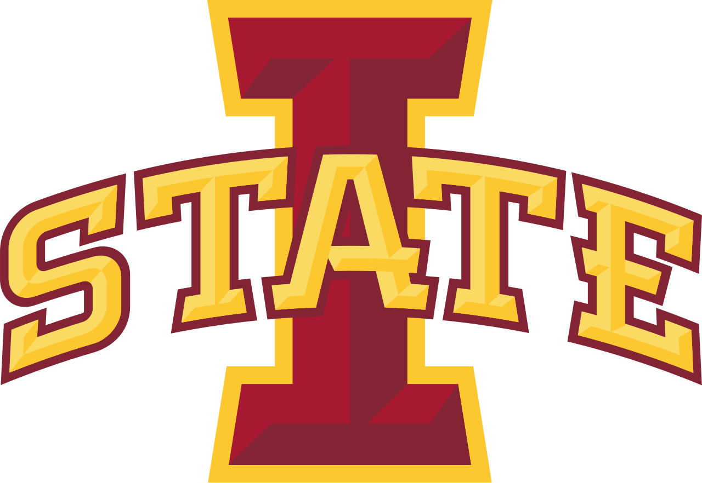
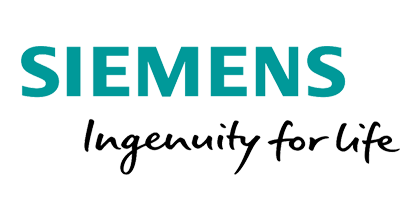
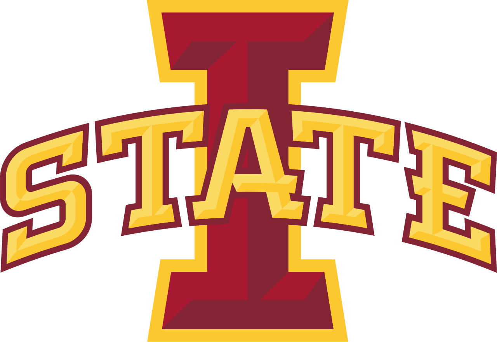

Testimonials
Saul is a remarkable, dedicated, and ambitious student. He makes every class that I have had him in better by asking thoughtful, probing questions. He is sociable, inquisitive, and I've seen him excel both individually as well as working within a team. He's one of the most driven students I've seen in my career. In addition to being excellent academically, he is one of the most teachable students I've ever had the pleasure of having in class. I give him my highest recommendation.
Saul interned with the Siemens Capital software aerospace business development team in 2023 and 2024, helping us with gathering market data, and developing tools for data analysis. I mentored and guided Saul as he worked on a variety of assignments ranging from market data collection, documenting data and process flow, developing data visualizations, and presenting the results of his work. He displays a high degree of motivation and is good with reaching out to others with questions or for follow up. He was very open to tackling new assignments, and open to learning new skills. During the internship, he learned how to use Tableau, MS Access, and vba coding to complete assignments in a self-teaching approach.
I worked with Saul in the 2021 Iowa State University Data Science for the Public Good Young Scholars Program. I was the graduate fellow supervising his work, as well as two other undergraduate interns, on a project working with the central Iowa non-profit Eat Greater Des Moines. Throughout the summer, Saul showed great curiosity and a willingness to ask questions. He was ready to take on challenges, learn new things, and get help when needed. Saul approached our work with excitement to reach our goals. Our project expanded his skillset in Python and introduced him to Google Data Studio for data visualization. I fully expect him to continue to expand his data science skills and grow as a data scientist. I think that Saul can be a good addition to any team due to his willingness to ask questions and enthusiasm for his work.
Click here to see what others have to say about me.
 


